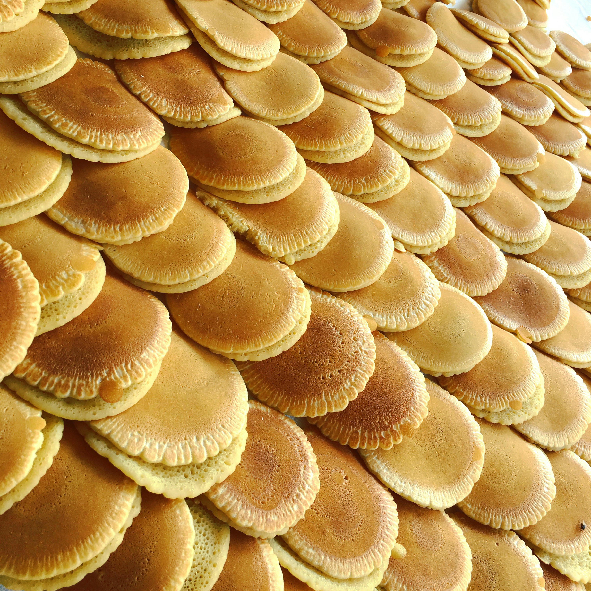
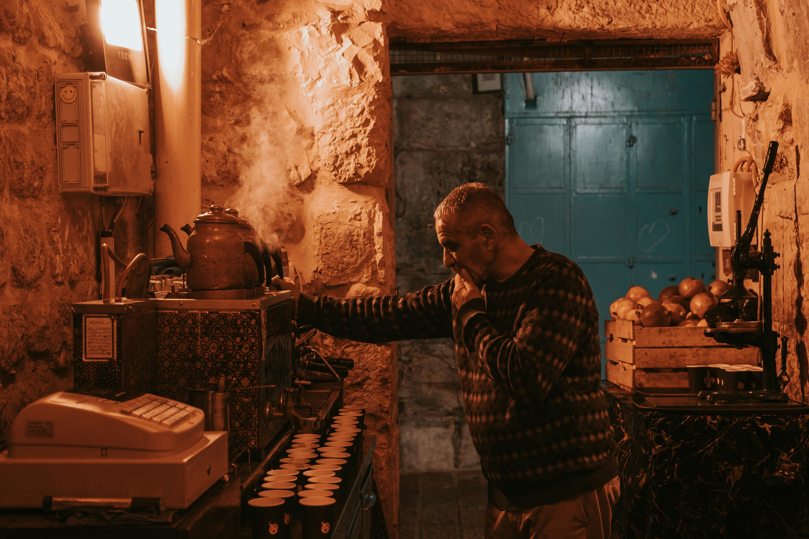
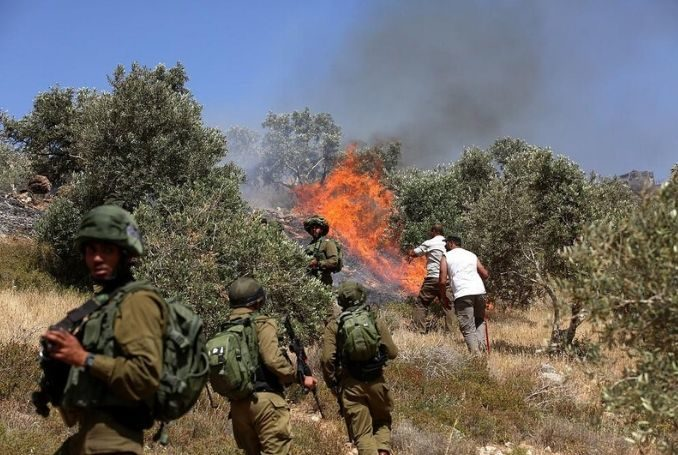
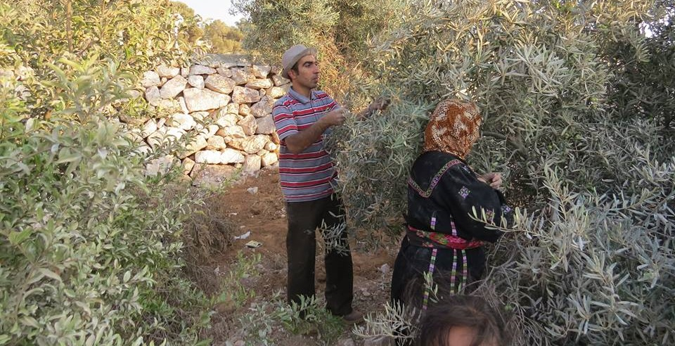
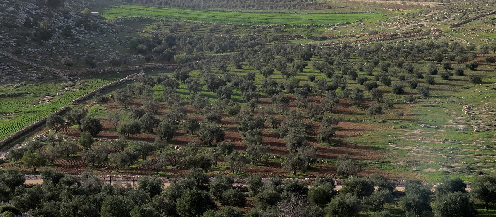

Culture
The Arts
Dance
Dabke is a Levantine folk dance, particularly popular among Lebanese, Jordanian, Palestinian, and Syrian communities. Dabke combines circle dance and line dancing and is widely performed at weddings and other joyous occasions. The line forms from right to left and the leader of the dabke heads the line, alternating between facing the audience and the other dancers.
The etymology of 'dabke' is uncertain but is thought to be derived from the Levantine Arabic word dabaka (Arabic: دبكة) meaning "stamping of the feet" or "to make a noise" It has become a symbolic form of resistance in occupied Palestine.
Embroidery
Traditional Costumes
The Keffiyeh

The Palestinian keffiyeh is a distinctly patterned black-and-white keffiyeh.
White keffiyehs had been traditionally worn by Palestinian peasants and bedouins to protect from the sun, when Palestine was part of the Ottoman Empire. Its use as a symbol of Palestinian nationalism and resistance dates back to the 1936–1939 Arab revolt in Palestine, which saw its wider use by more sections of Palestinian society.
Early Jewish migrants to Mandatory Palestine adopted the keffiyeh because they saw it as part of the authentic local lifestyle.
The patterns on the Palestinian keffiyeh symbolize various themes:
Olive leaves: Strength, resilience, perseverance.
Fishnet: Connection between Palestinian sailors and the Mediterranean Sea.
Bold lines: Trade routes going through Palestine, including the Silk Road.
Literature
Ghassan Fayiz Kanafani (1936-1972) was a prominent Palestinian author and politician, considered to be a leading novelist of his generation and one of the Arab world's leading Palestinian writers. Kanafani's works have been translated into more than 17 languages.
Kanafani was born in Acre, Mandatory Palestine in 1936. During the 1948 Palestine war, his family was forced out of their hometown by Zionist militias.
On 8 July 1972, Kanafani, was assassinated in Beirut by the Mossad, the Israeli foreign intelligence service. When Kanafani turned on the ignition of his Austin 1100, a grenade connected to the ignition switch detonated and in turn detonated a 3 kilo plastic bomb planted behind the bumper bar. Both Kanafani and his 17-year old niece Lamees Najim, who had been accompanying him, were killed.
Poetry
Mahmoud Darwish (1941-2008) was a Palestinian poet and author who was regarded as Palestine's national poet.
In 1988, Darwish wrote the Palestinian Declaration of Independence, which was the formal declaration for the creation of a State of Palestine. Darwish won numerous awards for his works. In his poetic works, Darwish explored Palestine as a metaphor for the loss of Eden, birth and resurrection, and the anguish of dispossession and exile. He has been described as incarnating and reflecting "the tradition of the political poet in Islam, the man of action whose action is poetry."
Oral Traditions (Hikaye & Hakawati)
The art of story telling was for a long time part of the cultural life in Arabic speaking countries of the Middle East. The tradition of "Tales From a Thousand and One Nights" is not an exception. In each small town or village of Palestine, itinerant story tellers called hakawati would visit and tell folk stories they knew, often in teahouses. The tales of the hakawati, once told for all ages, are now sometimes emerging from the Palestinian diaspora as children's books.
Palestinian hikaye is a form of oral literature created, performed and preserved by women. Usually narrated in winter, the performers are usually older women, who tell them to younger women and children.
Film
Check out this list of films made by Palestinian filmmakers. Palestinian Films
Architecture

The architecture of Palestine covers a vast historical time frame and a number of different styles and influences over the ages. The urban architecture of the region of Palestine prior to 1850 was relatively sophisticated. The Palestinian townhouse shared in the same basic conceptions regarding the arrangement of living space and apartment types commonly seen throughout the Eastern Mediterranean. The rich diversity and underlying unity of the architectural culture of this wider region stretching from the Balkans to North Africa was a function of the exchange fostered by the caravans of the trade routes, and the extension of Ottoman rule over most of this area, beginning in the early 16th century through until the end of World War I.
Cuisine
The cuisine is a diffusion of the cultures of civilizations that settled in the region of Palestine, particularly during and after the Islamic era beginning with the Arab Ummayad conquest, then the eventual Persian-influenced Abbasids and ending with the strong influences of Turkish cuisine, resulting from the coming of the Ottoman Turks. It is similar to other Levantine cuisines, including Lebanese, Syrian and Jordanian.
Cooking styles vary, and types of cooking style and ingredients used are generally based on the climate and location of the particular region and on traditions. Rice and variations of kibbee are common in the Galilee. The West Bank engages primarily in heavier meals involving the use of taboon bread, rice and meat, and coastal plain inhabitants frequent fish, other seafood, and lentils. The Gaza cuisine is a variation of the Levant cuisine, but is more diverse in seafood and spices. Gaza's inhabitants heavily consume chili peppers too. Meals are usually eaten in the household but dining out has become prominent particularly during parties where light meals like salads, bread dips and skewered meats are served.
Cooking styles vary, and types of cooking style and ingredients used are generally based on the climate and location of the particular region and on traditions. Rice and variations of kibbee are common in the Galilee. The West Bank engages primarily in heavier meals involving the use of taboon bread, rice and meat, and coastal plain inhabitants frequent fish, other seafood, and lentils. The Gaza cuisine is a variation of the Levant cuisine, but is more diverse in seafood and spices. Gaza's inhabitants heavily consume chili peppers too. Meals are usually eaten in the household but dining out has become prominent particularly during parties where light meals like salads, bread dips and skewered meats are served.

Blockade of the Gaza Strip
The import of goods into the Gaza Strip is restricted because of the blockade of the Gaza Strip by Egypt and Israel. Israel is accused by Palestinians of denying humanitarian supplies from aid organizations, including UN agencies, into the Gaza Strip in an effort to intentionally weaponize starvation against the people of certain areas of Gaza.
Israel's bombardment on civilian structures has led to imminent famine conditions in the Gaza Strip, resulting from Israeli airstrikes and Israel's ongoing blockade of the Strip, which includes restrictions on humanitarian aid. 2.2 million people in Gaza are now experiencing food insecurity at emergency level.
Airstrikes have destroyed food infrastructure, such as bakeries, mills, and food stores, and there is widespread scarcity of essential supplies due to the blockade of aid. This has caused starvation for more than half a million Gazans and is part of a broader humanitarian crisis in the Strip. It is the "highest number of people facing catastrophic hunger" ever recorded on the IPC scale, and is widely expected to be the most intense man-made famine since the Second World War
Olive Trees
Olive trees are a major agricultural crop in the Palestinian territories, where they are mostly grown for olive oil production. It has been estimated that olive production accounted for 57% of cultivated land in the Palestinian territories with 7.8 million fruit-bearing olive trees in 2011. In 2014, an estimated 108,000 tonnes of olives were pressed producing 24,700 tonnes of olive oil – which contributed US $109 million in added value to the crop.[2] Around 100,000 households rely on olives for their primary income.
The olive tree is seen by many Palestinians as being a symbol of nationality and connection to the land, particularly due to their slow growth and longevity.
The destruction of Palestinian olive trees has become a feature of the Israeli–Palestinian conflict, with regular reports of damage by Israeli settlers. In May 2023 a United Nations report stated that some 5,000 olive trees had been vandalized by settlers in less than 5 months
Olive trees have been cultivated in the region for many thousands of years, with some evidence of olive groves and olive oil technologies dating to the Chalcolithic period, between 3600–3300 BCE. Later in the Bronze Age, olive fruits were widely traded as shown by the Uluburun shipwreck – which may have been carrying an olive shipment from Palestine.
Olive trees are seen as being a major component of traditional Palestinian farming life, with several generations of families gathering together to harvest the olives for two months from mid-September. The harvest season is often associated with celebration for these families, and family and local community celebrations are organized with traditional Palestinian folk music and dancing.
In 2012 Israel was urged to protect West Bank olive trees after trees were uprooted in al-Mughir, Turmusaya, Nablus, al-Khader, and Ras Karkar. In 2014 trees were uprooted in Deir Istiya and Wadi Qana with some 800,000 to one million trees having been destroyed since 1967. In 2016 trees were uprooted to build a road in Qalqilya. In 2017 laborers began uprooting olive trees to build a bypass road near Azzun and Nabi Ilyas. According to international law an occupying power can only take land to build roads benefiting the residents or military needs specific to the occupied territory. In January 2017 B’Tselem reported there were approximately 60 kilometres (37 mi) of roads that Palestinian were prohibited from using. With the many trees being removed or vandalized, some 700 to 1000 years old and still bearing fruit, to build a wall roads, other "improvements", as well as for the building of illegal settlements this has caused economic hardships especially with families separated from their farmlands.[
In 2021 down to October, settlers vandalized 8,000 trees in the West Bank. In the first two weeks of the 2021 harvest in October alone, 18 incidents of damage to Palestinian olive groves, consisting of acts of battering or chopping down trees or denuding their fruits were reported.